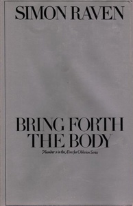
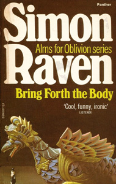
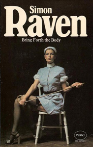
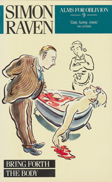

MP and under-secretary of Lord Canteloupe. Dies right at the beginning of the book, on 10 May 1972. Major character in series.




This part of the sequence revolves around the life of Somerset Lloyd-James but tells in part also the story of Captain Detterling and Leonard Percival, who investigate the death of Lloyd-James. When the story opens on 10 May 1972, Captain Detterling arrives at Somerset Lloyd-James's to discuss the health of Lord Canteloupe, since the Minister of Commerce seems broken down by his heavy work routine. Dolly, the housekeeper, who is in a state of shock, shows the captain the body of Lloyd-James in a bathtub filled with blood. Everything seems to indicate a suicide. The police explain to the captain that the affair officially will be regarded as a suicide caused by exhaustion. The government don’t want the police to look too deeply into the matter since some scandal may be revealed. However, the police agree to let Detterling be part of a silent investigation to find the truth about why Lloyd-James killed himself.
In the evening the captain has a rather boozy dinner with his distant cousin Canteloupe who seems to be in rather good health, despite the rumours, but drinks more than ever. Detterling suggests that Canteloupe make Peter Morrison his new under-secretary. At the time of his death Lloyd-James helped Canteloupe to sell a new kind of light metal for a British company and also planned how to blacken the name of competing companies. Detterling talks the always "moral" Morrison into accepting the job. Detterling and Leonard Percival, who suffers from stomach ulcers, attend the funeral of Lloyd-James and start their investigation right after the service. During this investigation a number of people are visited by the couple and the first is Maisie Malcolm (whose surname is revealed here for the first time), the prostitute frequented by Lloyd-James for many years. She has nothing to tell, except stories of a sexual nature. After this, they go to Corfu to interview Max de Freville and also see the grave of Angela Tuck, turned into a bizarre mausoleum by the heartbroken Max.
Detterling and Percival discuss many issues during the investigation and for the first time Captain Detterling reveals why he, after so many years in the army, never reached a higher rank than that of captain. During the war, he had signed an order for gasoline, without checking the number of gallons. Another officer had apparently sold much of this gasoline on the black market and, through his negligence, Detterling became a suspect when this affair was revealed. Eventually he was let off the hook but in reality his career came to a halt. After this story they visit Lloyd-James's mother, who mentions that she hadn’t had "real" connection with her son since he was twelve even though he visited her once or twice a year. Roger Constable, provost of Lancaster, is the next person on the list and he reveals a story about how Lloyd-James stole the contents of an essay he was given a prize for from an unpublished essay written some 20 years earlier. However, nothing could be proved. Tom Llewyllyn, who lives with his odd daughter 'Baby' at the college, also discusses this essay. When Detterling and Percival visits Fielding Gray he talks about the party that took place in 1945 which ended with Lloyd-James being sick and passing out.
During a pause there is held a memorial (and, indeed, memorable) dinner for Lloyd-James with nine guests: Carton Weir, Tom Llewyllyn, Peter Morrison, Jonathan Gamp, Gregory Stern, Captain Detterling, Lord Canteloupe, Fielding Gray and Maisie Malcolm. During this dinner Peter Morrison reveals a story he has just been told by old schoolmate Ivan Blessington who heard it from Lloyd-James himself recently: after the infamous party in 1945 the mean Lloyd-James had left half a crown instead of the ordinary five shillings for cleaning up. The outraged housekeeper, a young woman, had gone searching for Lloyd-James and found him sleeping. As it turned out the two of them had sex and she became pregnant. Lloyd-James didn’t know of this until recently when she wrote to him, telling him she had born him a son (officially with another) in 1946. She was now a widow and lived in poor circumstances and therefore asked Lloyd-James for some help. According to Blessington, Lloyd-James had been happily surprised and had been looking forward to meet his son.
Percival and Detterling trace the woman in question, Meriel Weekes, and visit her. It was her shop that Lloyd-James had been visiting on his last day. Her son is living with her and this young man, James Weekes, has become physically disfigured and mentally retarded after a car crash. Before that he was involved in crime, and crashed when he was chased by the police. Meriel Weekes tells Detterling and Percival about how shocked Lloyd-James had been during the meeting though he had provided them with some money. In the last discussion between Detterling and Percival they understand how the somewhat religious Lloyd-James had been broken down by what he considered to be a cruel joke on God’s part.